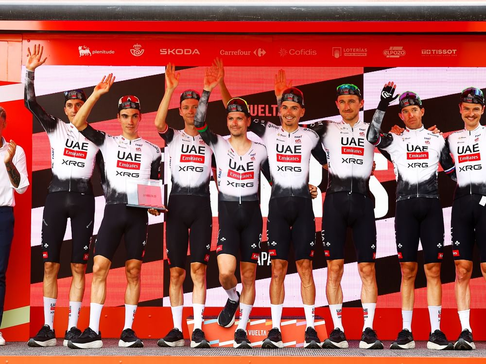

Team UAE XRG
UCI points: 24,830
Grand Tour performance: 13 stage wins (5 at the Tour, 3 at the Vuelta, 3 at the Giro); 42 stage top-10 finishes.
Led by Tadej Pogačar, who won 5 stages at the Tour and 3 at the Vuelta, plus multiple Monument victories.
Consistently strong in GC and stage races, with a deep roster of contenders. They hold the #1 spot amongst the strongest teams.
